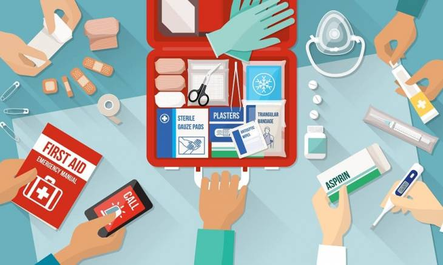

Trong cuộc sống thường ngày, mọi tình huống nguy hiểm đều có thể xảy đến bất kỳ lúc nào. Vì vậy, ngay khi sự cố xảy ra, chúng ta cần nhanh chóng áp dụng những biện pháp tự sơ cứu trong gia đình ngay lập tức. Vậy khi tiến hành tự sơ cứu trong gia đình tại chỗ như vậy, chúng ta cần phải chú ý những điều gì?

Khi tiến hành cấp cứu trong gia đình phải chú ý những gì?
Nếu trong gia đình có người thân gặp phải tình huống nguy hiểm, việc đầu tiên cần làm là tránh không được mất bình tĩnh dẫn đến bị cuống không biết phải làm gì. Chính xác mà nói, thì giữ bình tĩnh, để đầu óc tỉnh táo là việc đặc biệt quan trọng trong các tình huống này.
Tai nạn liên quan điện
Trong trường hợp có người thân (hoặc người lạ) bị điện giật thì cần phải lập tức ngắt nguồn điện (nhà có lắp Áp tô mát bảo vệ quá tải, ngắn mạch, dòng rò thì yên tâm là nguồn điện sẽ được tự ngắt). Trường hợp không có áp tô mát thì phải dùng cây (bằng gỗ khô, nhựa khô) để gạt người bị nạn ra khỏi vị trí bị điện giật, mà phải nhanh thì mới được, chứ đợi chạy đi tìm cây thì say good bye luôn. Trường hợp chập điện gây hỏa hoạn, rồi người mắt kẹt trong đám đó thì phải nhanh chóng đưa người ra khỏi đám cháy rồi sau mới tiến hành cấp cứu, khi đi vào cứu người cũng phải có kiến thức, không thôi thì sẽ hông ai vô cứu mình luôn. Trong trường hợp người bị nạn bị ngộ độc khí CO (trong đám cháy thường có nhiều khi CO do lượng Oxy không đủ để vật liệu cháy hết) thì phải khiêng người bị nạn ra nơi thoáng gió sau đó mới tiến hàng cấp cứu. (Phần cứu người trong đám cháy thì Ân sẽ có một bài viết khác, phần này thì đơn giản thôi)
Về tình trạng của người bị nạn thì mình phải quan sát kỹ, phải kiểm tra nhịp tim, hô hấp và phản ứng của đồng tử coi có gì bất thường hay không. Cách nhanh và dễ nhất là áp tai vào ngực nghe nhịp tim, rồi áp tai vào mũi người bị nạn nghe nhịp thở. Với người bình thường thì nhịp tim là 60-100 lần/phút. Riêng với người mà bị thương, mất nhiều máu, thì nhịp tim sẽ nhanh hơn (tại máu còn lại ít, nên phải bơm nhiều thì mới đủ để đi tới các cơ quan). Về đồng tử, thì người bình thường đồng tử ở hai bên con ngươi luôn to bằng nhau và khi gặp ánh sáng sẽ tự nhiên phản xạ thu nhỏ lại. Nhưng còn với người bị thương nặng, đồng tử hai bên nhiều lúc to hông có bằng nhau nữa, rồi gặp ánh sáng cũng mất luôn phản xạ thu nhỏ lại.
Gãy xương, xuất huyết bên trong
Trong trường hợp người bị nạn bị gãy xương hoặc xuất huyết não thì tuyệt đối tránh không nên tự ý di chuyển người bị nạn, để tránh làm nghiêm trọng hơn tình trạng bị thương.
Không được tự ý cho người bị nạn dùng thuốc giảm đau, vì thuốc giảm đau sẽ làm cho tình trạng chấn thương không được thể hiện rõ, và sẽ ảnh hưởng đến chẩn đoán, cũng như thời gian điều trị.
Bỏng và hôn mê
Sơ cứu trong gia đình thì không nên cho người bị nạn do bị bỏng hoặc bị tổn thương đường ruột ăn hoặc uống nước. Cũng tuyệt đối không cho người đang bị hôn mê uống nước, vì dễ làm cho nước rơi vào khí quản bị sặc dẫn đến tắc thở.
Trường hợp với người bị hôn mê, thì mình nên đặt nằm nghiêng, không được đặt nằm ngửa, nếu không, nước bọt trong miệng hoặc những vật sau khi nôn dễ chui vào thực quản gây ngạt thở (là tắt tử luôn).
Vết thương hở
Đối với trường hợp người bị nạn, mà ruột (nội tạng) lòi ra khỏi bụng luôn, thì không nên tìm cách nhét nội tạng về lại vị trí cũ (vì cơ bản chúng ta không biết vị trí cũ của nó chính xác là như thế nào). Và quan trọng, là cơ quan bị lòi ra ngoài có thể đã bị nhiễm trùng, vì vậy nếu chưa khử trùng mà lại đặt vào thì sẽ gây nhiễm trùng nặng (là khỏi cứu luôn).
Với vết thương hở, sơ cứu trong gia đình cần chú ý khi sử dụng băng gạc khi cầm máu. Thường thì lúc đầu mình phải cột chặt, để ngưng chảy máu. Nhưng sau đó cách mỗi tiếng, thì phải nới lỏng băng gạc, để tránh vùng bị tổn thương không bị hoại tử do thiếu máu vì bị băng bó trong thời gian dài.
Đối với trường hợp bị đâm do vật sắc nhọn thì không nên tiến hành băng bó ngay lập tức, vì dễ làm cho vết thương bị thiếu oxy dẫn đến sưng tấy. Nên khử trùng sạch vết thương, sau đó tiêm kháng sinh, rồi mới tiến hành băng bó vết thương. (Cái này có tiêm chích, nên phải do trung tâm y tế làm, người thường cầm cái tiêm là đã thấy sợ rồi).
Ngộ độc thực phẩm, đau bụng ỉa
Đặc biệt, với trường hợp đau bụng ỉa, đi ngoài không cầm được, thì thời gian đầu không nên uống thuốc cầm tiêu chảy. Vì như vậy sẽ làm chậm lại thời gian thải độc ra ngoài cơ thể, đường ruột nhiễm độc lâu hơn thì tình trạng nghiêm trọng hơn. Cho nên sơ cứu trong gia đình cần coi là đã đi ra hết sạch rồi, hoặc uống thuốc kháng viêm trước, rồi mới uống thuốc cầm tiêu chảy sau thì sẽ hiệu quả hơn.
Lưu ý
Và quan trọng nhất, với trường hợp vết thương nhỏ như đứt tay, đứt chân thông thường thì có thể sơ cứu (first aid) xong là xong. Nhưng với trường hợp nặng, thì sau khi tiến hành sơ cứu, cần phải liên lạc ngay lập tức với bệnh viện để có sự hỗ trợ về y tế kịp thời. Có nhiều người, thì một người lo sơ cứu, một người lo liên lạc với bệnh viện (Gọi 115) ngay lập tức luôn, và phải ưu tiên chọn bệnh viện gần nhất. Trong trường hợp ở nhà mình không biết phải sơ cứu như thế nào, trường hợp như gãy xương, thì phải giữ nguyên tình trạng. Tiếp theo liên lạc trạm y tế, hoặc bệnh viện gần nhất để sơ cứu, rồi chuyển lên tuyến trên để điều trị tiếp.
Về tủ thuốc trong gia đình:
Những loại thuốc thông thường thì phải đặt trong lọ sạch (nếu thuốc không có vĩ) và đậy chặt nắp. Đồng thơi ghi thời hạn sử dụng lên lọ thuốc nữa.
Không nên để thuốc/ tủ thuốc ở nơi có độ ẩm cao như nhà bếp, gần nhà vệ sinh, gần hồ cá hoặc chậu cây. Trong tủ thuốc có thể để thêm mấy viên hút ẩm.
Bông gòn hút ẩm trong các lọ thuốc thì mình phải kiểm tra, và thay định kỳ. Vì khi mở nắp, thì bông gòn có tác dụng hút ẩm, giúp cho thuốc không bị ẩm. Sau một thời gian, gì tính hút ẩm của bông gòn sẽ giảm. Cho nên không thay kịp thời thì sẽ làm cho thuốc trong lọ bị ẩm dẫn đến biến chất.
Thuốc đã quá hạn thì phải xử lý kịp thời (bỏ/ tiêu hủy). Nếu lỡ uống thì… có gì lại không lấy ra được.